Menu: Draw > Line > Freehand Line
Shortcut: L, F
Commands: linefree | freehand | lf
Description:
With this tool you can draw freehand lines. This tool is usually used only
sparingly since technical drawings require absolute accuracy. However, on some
occasions this tool might come in handy, for example for broken edges like
shown here:

Procedure: